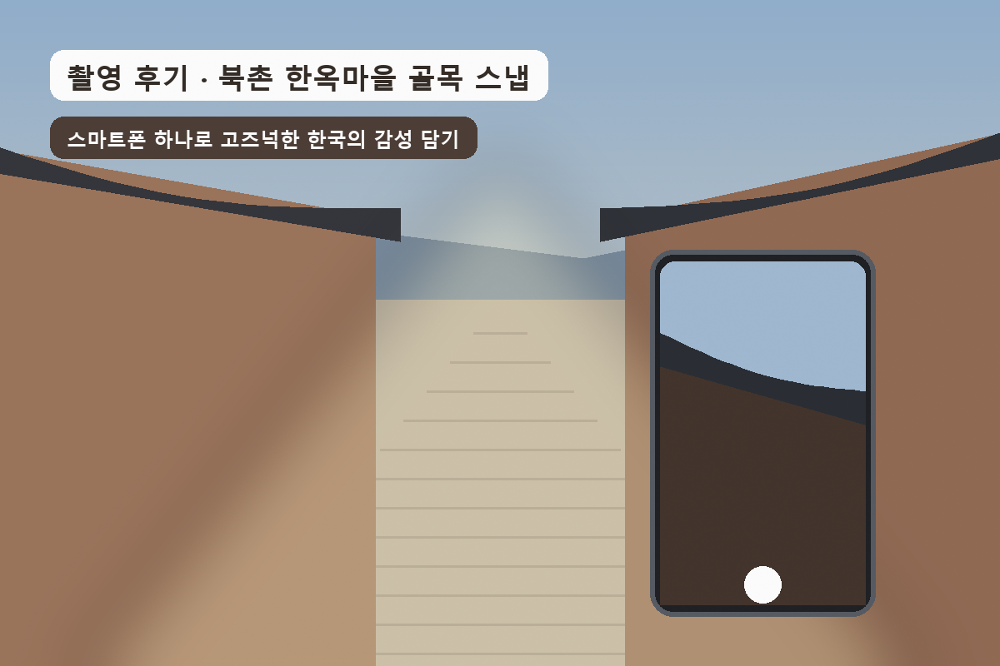
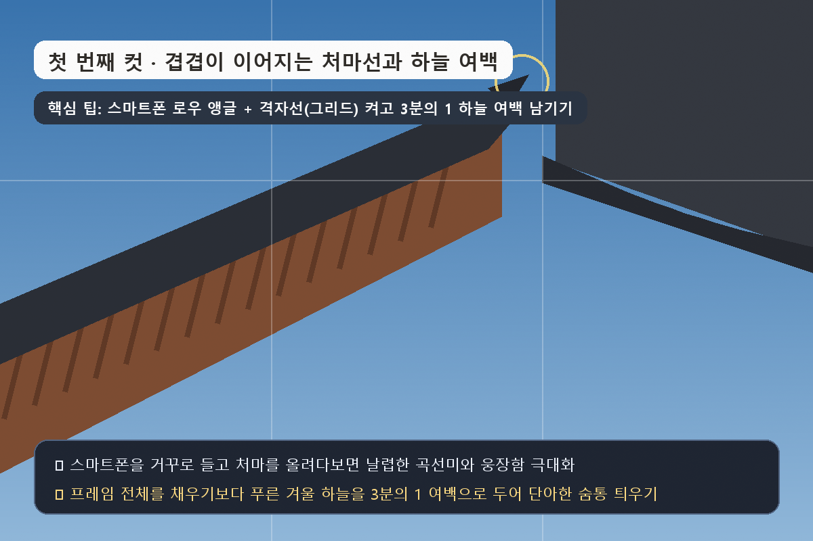
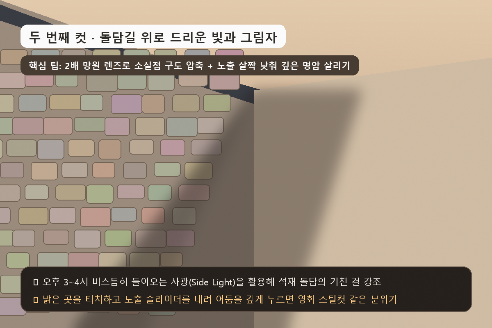
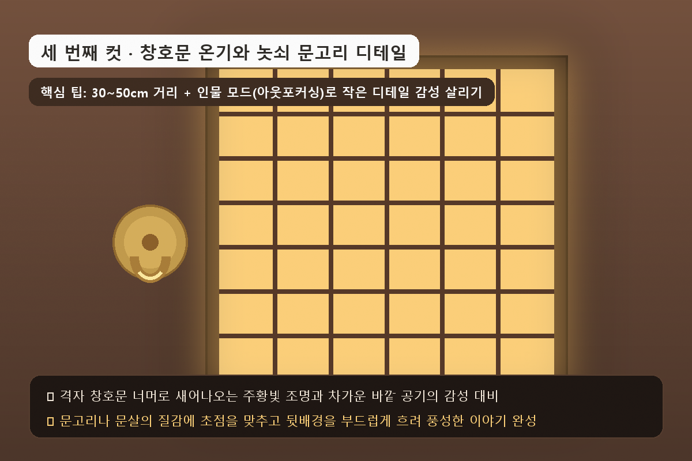

북촌 한옥마을 골목 스냅 촬영 후기, 스마트폰 하나로 고즈넉한 감성 담아 본 기록

지난 한강 노을 촬영 후기에 이어, 이번에는 조금 더 차분하고 고즈넉한 분위기를 찾아 종로 북촌 한옥마을 골목길로 출사를 다녀왔어요. 날씨가 쌀쌀해지면 한옥 골목 특유의 고요함과 단아한 매력이 한층 더 짙어지거든요. 붉은 벽돌과 흑회색 기와, 좁은 오르막길 사이로 비치는 겨울 오후의 낮은 햇살은 걷는 발걸음마다 카메라 앱을 켜게 만들었어요. 많은 분들이 한옥마을 같은 유명 출사지에 가면 무거운 DSLR이나 전문가용 렌즈가 있어야 근사한 사진이 나온다고 생각하시지만, 이번에도 오직 주머니 속 스마트폰 하나만 가볍게 쥐고 골목골목을 누볐답니다. 이번 후기에서는 북촌 한옥 골목에서 스마트폰으로 직접 담아 본 대표적인 세 가지 컷과 현장에서 유용했던 촬영 팁들을 생생하게 기록해 드릴게요.
1. 첫 번째 컷: 겹겹이 이어지는 처마선과 하늘의 여백

한옥의 가장 큰 매력은 하늘을 향해 부드럽게 들려 올라간 기와 처마의 곡선미예요. 골목길을 걷다 보면 양옆의 한옥 지붕들이 서로 맞닿을 듯 겹쳐지는 지점을 만날 수 있어요. 이 지점에서 스마트폰을 거꾸로 들고 처마를 향해 위로 올려다보는 '로우 앵글'로 촬영해 보세요. 렌즈가 아래로 내려가면서 처마선이 화면 가장자리에서 대각선으로 뻗어 나와 훨씬 입체적이고 웅장하게 담겨요. 이때 화면 전체를 기와로 꽉 채우기보다는, 처마와 처마 사이에 푸른 겨울 하늘을 3분의 1 정도 여백으로 남겨 두는 것이 포인트예요. 답답하지 않고 한옥 특유의 단아한 숨통이 트이거든요. 그리드(격자선)를 켜고 처마 끝의 날렵한 꼭짓점이 격자의 교차점에 오도록 맞추면 흔들림 없는 완벽한 구도가 완성된답니다.
2. 두 번째 컷: 돌담길 위로 길게 드리운 오후의 빛과 그림자

오후 3시에서 4시 사이, 해가 낮게 기울기 시작하면 한옥 돌담길은 빛과 그림자의 무대로 변해요. 돌담의 오돌토돌한 석재 질감 사이로 비스듬히 빛이 들어오면서 깊은 명암이 생겨나거든요. 이 시간대에는 돌담 바로 옆에 바짝 붙어서 벽면을 따라 길게 소실점이 생기도록 찍어 보세요. 스마트폰의 2배 망원 렌즈를 사용하면 왜곡 없이 돌담의 질감과 골목의 원근감이 압축되어 훨씬 밀도 높은 사진이 나와요. 주의할 점은 화면 전체를 밝게 찍으려고 하지 않는 것이에요. 밝은 곳을 손가락으로 가볍게 터치해 초점을 맞추고, 노출 슬라이더를 살짝 낮춰 보세요. 그러면 그림자 부분은 깊은 어둠으로 가라앉고 빛을 받는 돌담 표면과 바닥의 거친 결만 드라마틱하게 살아나 영화 스틸컷 같은 무게감이 생겨요.
3. 세 번째 컷: 창호문 너머로 번지는 온기와 작은 디테일 스냅

골목 전체의 풍경을 충분히 담았다면, 마지막에는 걸음을 멈추고 한옥이 품은 작은 디테일에 시선을 맞춰 보세요. 오래된 나무 대문의 나뭇결, 소박하게 걸린 놋쇠 문고리, 그리고 격자 창호문 너머로 은은하게 새어나오는 실내 주황빛 조명 같은 것들이에요. 특히 차가운 바깥 공기와 대비되는 창호문의 따스한 불빛은 보는 사람의 마음까지 포근하게 만들어 줘요. 이 컷을 찍을 때는 피사체와 약 30~50cm 거리를 두고 인물 사진 모드나 2배 줌을 켜 보세요. 창호문의 문살 패턴이나 문고리에 또렷하게 초점이 맞으면서 뒷배경이 부드럽게 흐려져 감성적인 정물 스냅이 완성돼요. 굳이 넓은 풍경이 아니더라도 이러한 작은 조각들이 모여 그날의 출사를 더욱 풍성하고 따뜻한 기억으로 완성해 준답니다.
이번 북촌 한옥마을 스냅 촬영을 정리해 보면, 로우 앵글로 처마선의 곡선과 하늘 여백 담기, 낮은 오후 햇살을 이용해 돌담의 깊은 명암과 질감 살리기, 창호문과 문고리 같은 작은 디테일로 따뜻한 온기 기록하기였습니다. 추운 날씨에 손은 조금 시렸지만, 골목마다 깃든 고즈넉한 한국의 멋을 담아내기에는 더없이 좋은 시간이었어요. 무거운 전문 장비 없이도 충분히 멋진 기록을 남길 수 있다는 것을 다시 한번 확인했답니다. 스마트폰 하나로도 감성 사진은 충분하다는 믿음으로, 여러분도 이번 주말 가까운 골목길로 가벼운 산책 출사를 떠나 보세요. 지담 스튜디오도 여러분의 일상에 작은 영감이 되는 생생한 촬영 후기를 계속해서 전해 드릴게요. 여러분이 알고 계시는 나만의 감성 골목 명소가 있다면 댓글로 추천해 주세요. 이웃추가로 다음 후기도 함께해 주시면 감사하겠습니다!